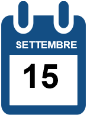
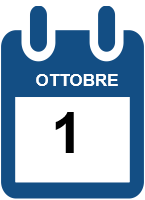

Per ulteriori informazioni sull’impegno di Deutsche nell’arte continua
Per scoprire di più sul sostegno agli artisti giovani clicca qui
L’arte diffonde nuove idee che danno forma al nostro futuro, ispira le persone, amplifica le nuove prospettive e ci permette di trovare soluzioni insolite e innovative.
Per questo, da oltre 30 anni la promozione dell’arte è al centro delle attività culturali di Deutsche.
Il programma artistico di Deutsche persegue un obiettivo: creare accesso alla cultura.
“Art works", l‘arte che vive nei luoghi di lavoro , è la filosofia che guida i programmi culturali dell’Istituto.
Secondo questo motto, Deutsche offre accesso all’arte contemporanea ai propri dipendenti, clienti e pubblico generico attraverso la Deutsche Collection - allestita presso i luoghi di lavoro (uffici, corridoi e sale riunioni) -, le mostre realizzate a livello globale e i programmi di education.
Supportiamo progetti culturali in partnership con musei, fiere d’arte ed altre istituzioni, e, attraverso il premio “Artist of the Year”, incoraggiamo i giovani artisti emergenti attraverso una una piattaforma di promozione gobale. Con la rivista ArtMag, raccontiamo le novità del settore e portiamo la visione artistica di Deutsche a milioni di lettori nel mondo.
I prossimi appuntamenti

Mostra di Basim Magdy al MAXXI di Roma

Scopri la collezione Deutsche in Italia: Open Day a Milano Bicocca.
I progetti di Deutsche nell’arte
DB ArtMag
DB ArtMag è il magazine on line di Deutsche sulle nuove tendenze dell’arte contemporanea
www.db-artmag.de/